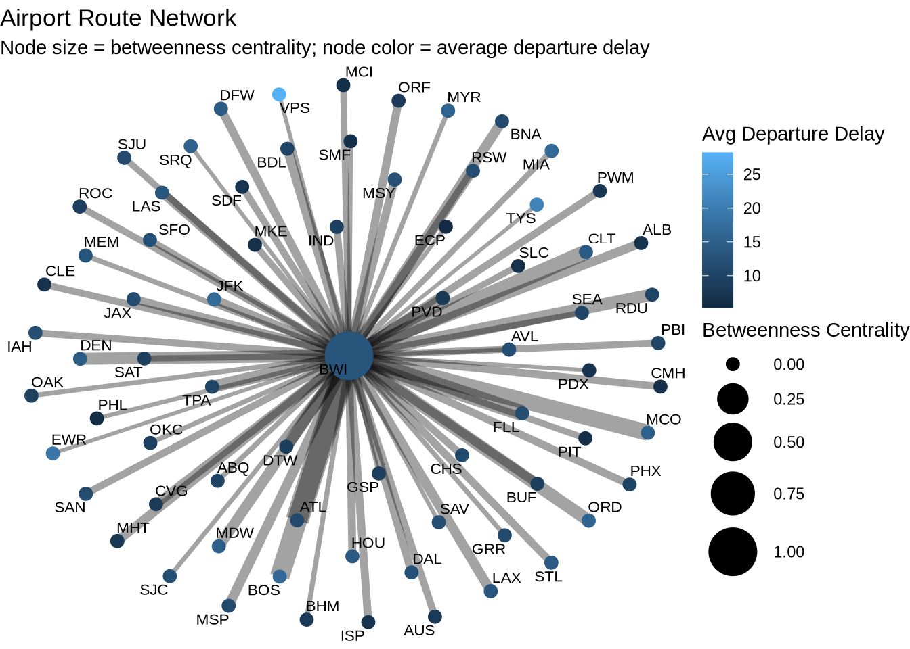
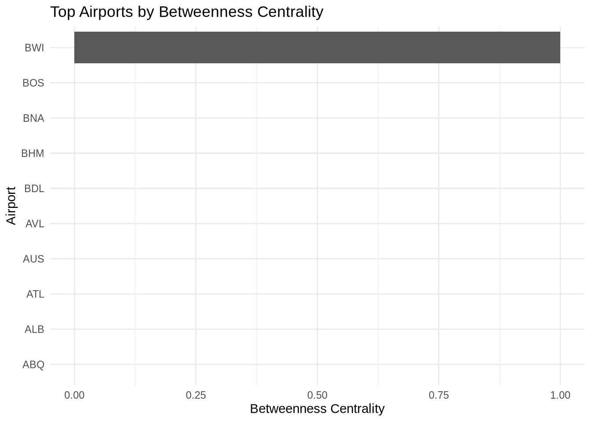
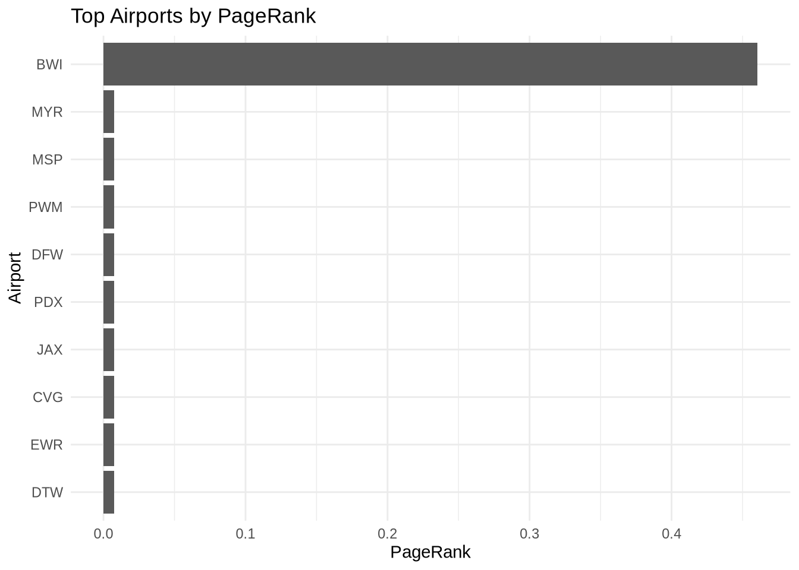
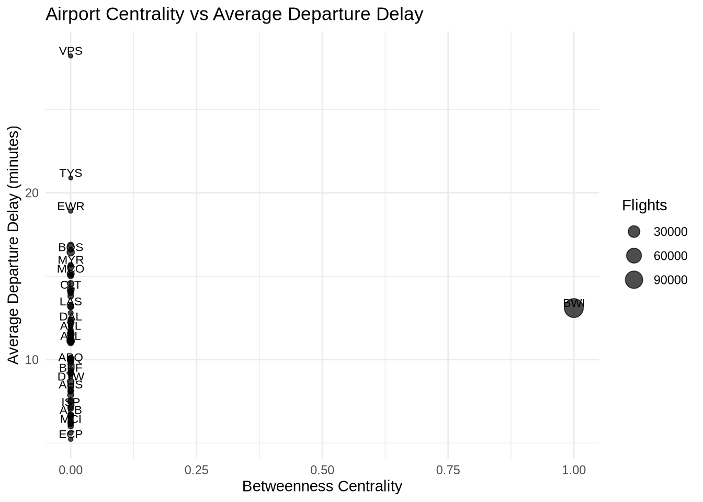
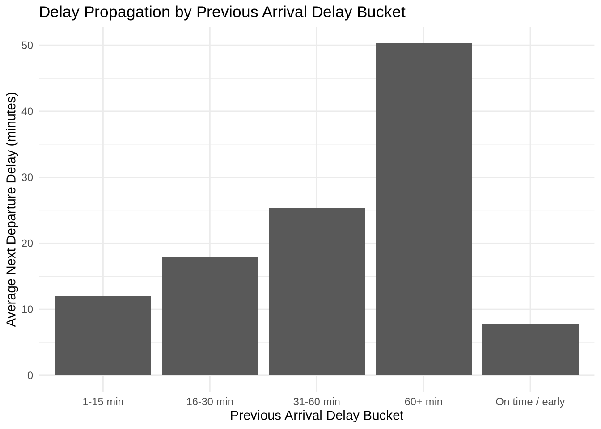
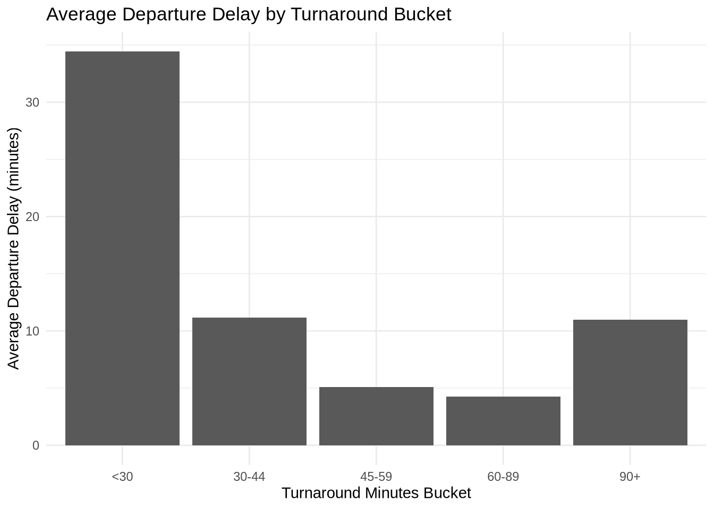
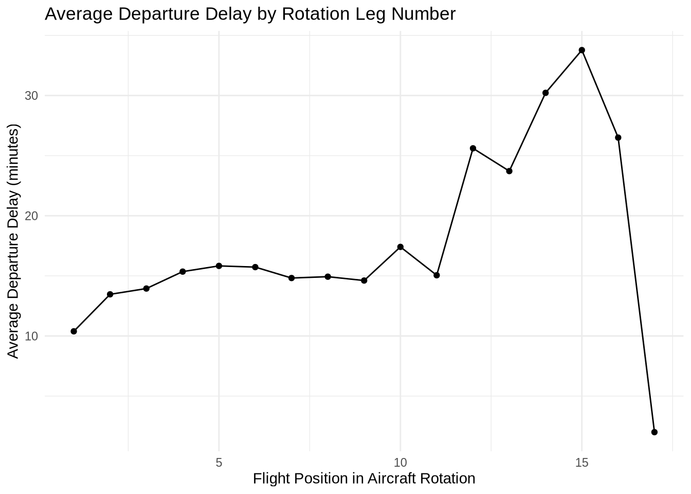

── Attaching core tidyverse packages ──────────────────────── tidyverse 2.0.0 ──
✔ dplyr 1.1.4 ✔ readr 2.1.5
✔ forcats 1.0.0 ✔ stringr 1.5.2
✔ ggplot2 3.5.2 ✔ tibble 3.3.0
✔ lubridate 1.9.4 ✔ tidyr 1.3.1
✔ purrr 1.1.0
── Conflicts ────────────────────────────────────────── tidyverse_conflicts() ──
✖ dplyr::filter() masks stats::filter()
✖ dplyr::lag() masks stats::lag()
ℹ Use the conflicted package (<http://conflicted.r-lib.org/>) to force all conflicts to become errors
Attaching package: 'janitor'
The following objects are masked from 'package:stats':
chisq.test, fisher.test
Loading required package: lattice
Attaching package: 'caret'
The following object is masked from 'package:purrr':
lift
Loading required package: Matrix
Attaching package: 'Matrix'
The following objects are masked from 'package:tidyr':
expand, pack, unpack
Loaded glmnet 4.1-10
Attaching package: 'kableExtra'
The following object is masked from 'package:dplyr':
group_rows
Attaching package: 'igraph'
The following objects are masked from 'package:lubridate':
%--%, union
The following objects are masked from 'package:dplyr':
as_data_frame, groups, union
The following objects are masked from 'package:purrr':
compose, simplify
The following object is masked from 'package:tidyr':
crossing
The following object is masked from 'package:tibble':
as_data_frame
The following objects are masked from 'package:stats':
decompose, spectrum
The following object is masked from 'package:base':
union
Attaching package: 'tidygraph'
The following object is masked from 'package:igraph':
groups
The following object is masked from 'package:skimr':
focus
The following object is masked from 'package:stats':
filterNetwork Analysis BWI to JFK/EWR
Feature Engineering
Netowrk Centrality Metrics
##| eval: false
##| echo: false
# ----------------------------------------------------
# Build Route Network
# ----------------------------------------------------
route_edges <- df_work %>%
group_by(origin, dest) %>%
summarise(
flights = n(),
mean_dep_delay = mean(dep_delay_minutes, na.rm = TRUE),
mean_arr_delay = mean(arr_delay_minutes, na.rm = TRUE),
delay_rate = mean(is_delayed, na.rm = TRUE),
.groups = "drop"
)
g <- graph_from_data_frame(route_edges, directed = TRUE)
# ----------------------------------------------------
# Compute Network Centrality Metrics
# ----------------------------------------------------
airport_metrics <- tibble(
airport = V(g)$name,
degree = degree(g, mode = "all"),
indegree = degree(g, mode = "in"),
outdegree = degree(g, mode = "out"),
betweenness = betweenness(g, directed = TRUE, normalized = TRUE),
closeness = closeness(g, mode = "out", normalized = TRUE),
pagerank = page_rank(g, directed = TRUE)$vector
)
# ----------------------------------------------------
# Add Delay Statistics
# ----------------------------------------------------
airport_delay <- df_work %>%
group_by(origin) %>%
summarise(
avg_dep_delay = mean(dep_delay_minutes, na.rm = TRUE),
flights = n(),
.groups = "drop"
) %>%
rename(airport = origin)
airport_analysis <- airport_metrics %>%
left_join(airport_delay, by = "airport")
# ----------------------------------------------------
# Airport Network Visualization
# ----------------------------------------------------
graph_tbl <- as_tbl_graph(g) %>%
left_join(airport_analysis, by = c("name" = "airport"))
ggraph(graph_tbl, layout = "fr") +
geom_edge_link(aes(width = flights), alpha = 0.2, show.legend = FALSE) +
geom_node_point(aes(size = betweenness, color = avg_dep_delay)) +
geom_node_text(aes(label = name), repel = TRUE, size = 3) +
scale_size_continuous(range = c(3, 12)) +
labs(
title = "Airport Route Network",
subtitle = "Node size = betweenness centrality; node color = average departure delay",
color = "Avg Departure Delay",
size = "Betweenness Centrality"
) +
theme_void()Warning: The `trans` argument of `continuous_scale()` is deprecated as of ggplot2 3.5.0.
ℹ Please use the `transform` argument instead.
# ----------------------------------------------------
# Top Airports by Betweenness Centrality
# ----------------------------------------------------
airport_analysis %>%
arrange(desc(betweenness)) %>%
slice_head(n = 10) %>%
ggplot(aes(x = reorder(airport, betweenness), y = betweenness)) +
geom_col() +
coord_flip() +
labs(
title = "Top Airports by Betweenness Centrality",
x = "Airport",
y = "Betweenness Centrality"
) +
theme_minimal()
# ----------------------------------------------------
# Top Airports by PageRank
# ----------------------------------------------------
airport_analysis %>%
arrange(desc(pagerank)) %>%
slice_head(n = 10) %>%
ggplot(aes(x = reorder(airport, pagerank), y = pagerank)) +
geom_col() +
coord_flip() +
labs(
title = "Top Airports by PageRank",
x = "Airport",
y = "PageRank"
) +
theme_minimal()
# ----------------------------------------------------
# Centrality vs Delay
# ----------------------------------------------------
ggplot(airport_analysis, aes(x = betweenness, y = avg_dep_delay, label = airport)) +
geom_point(aes(size = flights), alpha = 0.7) +
geom_text(check_overlap = TRUE, nudge_y = 0.3, size = 3) +
labs(
title = "Airport Centrality vs Average Departure Delay",
x = "Betweenness Centrality",
y = "Average Departure Delay (minutes)",
size = "Flights"
) +
theme_minimal()
# ----------------------------------------------------
# Centrality Summary Table
# ----------------------------------------------------
airport_analysis %>%
arrange(desc(betweenness)) %>%
select(
airport,
degree,
indegree,
outdegree,
betweenness,
pagerank,
avg_dep_delay,
flights
) %>%
slice_head(n = 15) %>%
kbl(caption = "Top Airports by Betweenness Centrality", digits = 3) %>%
kable_styling(full_width = FALSE)| airport | degree | indegree | outdegree | betweenness | pagerank | avg_dep_delay | flights |
|---|---|---|---|---|---|---|---|
| BWI | 142 | 71 | 71 | 1 | 0.461 | 13.091 | 111347 |
| ABQ | 2 | 1 | 1 | 0 | 0.008 | 9.840 | 534 |
| ALB | 2 | 1 | 1 | 0 | 0.008 | 6.683 | 1922 |
| ATL | 2 | 1 | 1 | 0 | 0.008 | 11.127 | 7286 |
| AUS | 2 | 1 | 1 | 0 | 0.008 | 8.214 | 1307 |
| AVL | 2 | 1 | 1 | 0 | 0.008 | 11.729 | 109 |
| BDL | 2 | 1 | 1 | 0 | 0.008 | 10.077 | 2134 |
| BHM | 2 | 1 | 1 | 0 | 0.008 | 8.097 | 475 |
| BNA | 2 | 1 | 1 | 0 | 0.008 | 11.084 | 2290 |
| BOS | 2 | 1 | 1 | 0 | 0.008 | 16.439 | 5957 |
| BUF | 2 | 1 | 1 | 0 | 0.008 | 9.218 | 1845 |
| CHS | 2 | 1 | 1 | 0 | 0.008 | 10.995 | 1341 |
| CLE | 2 | 1 | 1 | 0 | 0.008 | 6.598 | 1176 |
| CLT | 2 | 1 | 1 | 0 | 0.008 | 14.190 | 4348 |
| CMH | 2 | 1 | 1 | 0 | 0.008 | 6.245 | 1391 |
# TODO
# Need a bigger network - get more BTS and waether data say for 10 to 20 big hubsPropagation Analysis
# ------------------------------------------
# Propagation summary: previous arrival delay
# vs next departure delay
# ------------------------------------------
propagation_summary <- df_work %>%
filter(!is.na(prev_arr_delay), !is.na(dep_delay_minutes)) %>%
mutate(
prev_delay_bucket = case_when(
prev_arr_delay <= 0 ~ "On time / early",
prev_arr_delay <= 15 ~ "1-15 min",
prev_arr_delay <= 30 ~ "16-30 min",
prev_arr_delay <= 60 ~ "31-60 min",
TRUE ~ "60+ min"
)
) %>%
group_by(prev_delay_bucket) %>%
summarise(
flights = n(),
avg_next_dep_delay = mean(dep_delay_minutes, na.rm = TRUE),
median_next_dep_delay = median(dep_delay_minutes, na.rm = TRUE),
prob_next_delay = mean(is_delayed, na.rm = TRUE),
avg_turnaround = mean(turnaround_minutes, na.rm = TRUE),
.groups = "drop"
)
print(propagation_summary)# A tibble: 5 × 6
prev_delay_bucket flights avg_next_dep_delay median_next_dep_delay
<chr> <int> <dbl> <dbl>
1 1-15 min 32454 12.0 1
2 16-30 min 13105 18.0 8
3 31-60 min 10553 25.3 12
4 60+ min 10584 50.3 10
5 On time / early 143955 7.67 0
# ℹ 2 more variables: prob_next_delay <dbl>, avg_turnaround <dbl>ggplot(propagation_summary, aes(x = prev_delay_bucket, y = avg_next_dep_delay)) +
geom_col() +
labs(
title = "Delay Propagation by Previous Arrival Delay Bucket",
x = "Previous Arrival Delay Bucket",
y = "Average Next Departure Delay (minutes)"
) +
theme_minimal()
Turnaround vs propagation
turnaround_propagation <- df_work %>%
filter(!is.na(prev_arr_delay), !is.na(turnaround_minutes), !is.na(dep_delay_minutes)) %>%
mutate(
turnaround_bucket = case_when(
turnaround_minutes < 30 ~ "<30",
turnaround_minutes < 45 ~ "30-44",
turnaround_minutes < 60 ~ "45-59",
turnaround_minutes < 90 ~ "60-89",
TRUE ~ "90+"
)
) %>%
group_by(turnaround_bucket) %>%
summarise(
flights = n(),
avg_dep_delay = mean(dep_delay_minutes, na.rm = TRUE),
prob_delay = mean(is_delayed, na.rm = TRUE),
avg_prev_arr_delay = mean(prev_arr_delay, na.rm = TRUE),
.groups = "drop"
)
print(turnaround_propagation)# A tibble: 5 × 5
turnaround_bucket flights avg_dep_delay prob_delay avg_prev_arr_delay
<chr> <int> <dbl> <dbl> <dbl>
1 30-44 14142 11.2 0.226 5.74
2 45-59 31368 5.08 0.0853 1.07
3 60-89 29123 4.28 0.0722 0.610
4 90+ 110785 11.0 0.158 13.0
5 <30 25233 34.4 0.526 28.2 ggplot(turnaround_propagation, aes(x = turnaround_bucket, y = avg_dep_delay)) +
geom_col() +
labs(
title = "Average Departure Delay by Turnaround Bucket",
x = "Turnaround Minutes Bucket",
y = "Average Departure Delay (minutes)"
) +
theme_minimal()
Aircraft rotation fragility
rotation_fragility <- df_work %>%
filter(!is.na(rotation_leg_number), !is.na(dep_delay_minutes)) %>%
group_by(rotation_leg_number) %>%
summarise(
flights = n(),
avg_dep_delay = mean(dep_delay_minutes, na.rm = TRUE),
prob_delay = mean(is_delayed, na.rm = TRUE),
avg_prev_arr_delay = mean(prev_arr_delay, na.rm = TRUE),
avg_turnaround = mean(turnaround_minutes, na.rm = TRUE),
.groups = "drop"
)
print(rotation_fragility)# A tibble: 17 × 6
rotation_leg_number flights avg_dep_delay prob_delay avg_prev_arr_delay
<int> <int> <dbl> <dbl> <dbl>
1 1 104993 10.4 0.151 13.3
2 2 71962 13.5 0.210 8.11
3 3 19232 13.9 0.212 8.62
4 4 12522 15.4 0.250 9.81
5 5 4234 15.8 0.243 11.3
6 6 2456 15.7 0.260 10.7
7 7 901 14.8 0.242 10.3
8 8 581 14.9 0.243 11.3
9 9 234 14.6 0.274 9.56
10 10 152 17.4 0.322 8.75
11 11 80 15.0 0.275 11.6
12 12 46 25.6 0.391 11.2
13 13 28 23.7 0.321 18.0
14 14 18 30.2 0.389 23.9
15 15 9 33.8 0.333 40.3
16 16 4 26.5 0.5 21.8
17 17 1 2 0 1
# ℹ 1 more variable: avg_turnaround <dbl>ggplot(rotation_fragility, aes(x = rotation_leg_number, y = avg_dep_delay)) +
geom_line() +
geom_point() +
labs(
title = "Average Departure Delay by Rotation Leg Number",
x = "Flight Position in Aircraft Rotation",
y = "Average Departure Delay (minutes)"
) +
theme_minimal()